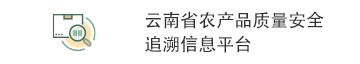
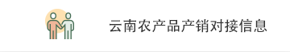
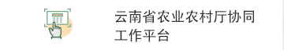

云南省人民政府网
简
|
繁
|
无障碍浏览
首页
政务公开
办事服务
互动交流
云农概况
首页
政务公开
办事服务
互动交流
云农概况



国务院部门网站
外交部
国防部
国家发展和改革委员会
教育部
科学技术部
工业和信息化部
国家民族事务委员会
公安部
国家安全部
民政部
司法部
财政部
人力资源和社会保障部
自然资源部
生态环境部
住房和城乡建设部
交通运输部
水利部
农业农村部
商务部
文化和旅游部
国家卫生健康委员会
退役军人事务部
应急管理部
人民银行
审计署
国家语言文字工作委员会
国家外国专家局
国家航天局
国家原子能机构
国家海洋局
国家核安全局
国务院国有资产监督管理委员会
海关总署
国家税务总局
国家市场监督管理总局
国家广播电视总局
国家体育总局
国家统计局
国家国际发展合作署
国家医疗保障局
国务院参事室
国家机关事务管理局
国家认证认可监督管理委员会
国家标准化管理委员会
国家新闻出版署（国家版权局）
国家宗教事务局
国务院港澳事务办公室
国务院研究室
国务院侨务办公室
国务院台湾事务办公室
国家互联网信息办公室
国务院新闻办公室
新华通讯社
中国科学院
中国社会科学院
中国工程院
国务院发展研究中心
中央广播电视总台
中国气象局
中国银行保险监督管理委员会
中国证券监督管理委员会
国家行政学院
国家信访局
国家粮食和物资储备局
国家能源局
国家国防科技工业局
国家烟草专卖局
国家移民管理局
国家林业和草原局
国家铁路局
中国民用航空局
国家邮政局
国家文物局
国家中医药管理局
国家煤矿安全监察局
国家外汇管理局
国家药品监督管理局
国家知识产权局
出入境管理局
国家公园管理局
国家公务员局
国家档案局
国家保密局
国家密码管理局
各省市政府网站
北京
天津
河北
山西
内蒙古
辽宁
吉林
黑龙江
上海
江苏
浙江
安徽
福建
江西
山东
河南
湖北
湖南
广东
广西
海南
重庆
四川
贵州
云南
西藏
陕西
甘肃
青海
宁夏
新疆
香港
澳门
台湾
新疆生产建设兵团
省政府部门网站
云南省发展和改革委员会
云南省工业和信息化厅
云南省教育厅
云南省科学技术厅
云南省民族宗教事务委员会
云南省公安厅
云南省民政厅
云南省司法厅
云南省财政厅
云南省人力资源和社会保障厅
云南省自然资源厅
云南省生态环境厅
云南省住房和城乡建设厅
云南省交通运输厅
云南省农业农村厅
云南省水利厅
云南省商务厅
云南省文化和旅游厅
云南省卫生健康委员会
云南省退役军人事务厅
云南省应急管理厅
云南省审计厅
云南省人民政府外事办公室
云南省人民政府国有资产监督管理委员会
云南省人民政府研究室
云南省市场监督管理局
云南省广播电视局
云南省能源局
云南省林业和草原局
云南省体育局
云南省统计局
云南省地方金融监督管理局
云南省扶贫开发办公室
云南省机关事务管理局
云南省信访局
云南省人民防空办公室
云南省医疗保障局
云南省粮食和物资储备局
云南省监狱管理局
云南省戒毒管理局
云南省药品监督管理局
省内专业网站
省委统战部
省委政法委员会
省委省直机关工委
省委机构编制办公室
云南省投资促进局
云南省供销合作社
昆明海关
云南省税务局
国家统计局云南调查总队
商务部驻昆明特派员办事处
省妇联
省残疾人联合会
云南青年信息网
云南标准化服务信息网
云南法治网
云南省对外投资合作网
云南省政府采购
云南省图书馆
云南人才
云南招考频道
云南省教育厅大中专毕业生就业服务网
云南电子口岸
其他省市农业网站
昆明市政府
昭通市政府
曲靖市政府
玉溪市政府
保山市政府
楚雄州政府
红河州政府
文山州政府
普洱市政府
西双版纳州政府
大理州政府
德宏州政府
丽江市政府
怒江州政府
迪庆州政府
临沧市政府
其他链接
云南大学
昆明理工大学
云南师范大学
昆明医科大学
云南农业大学
云南中医药大学
云南民族大学
云南财经大学
西南林业大学
云南艺术学院
云南警官学院
昆明学院
大理大学
玉溪师范学院
曲靖师范学院
楚雄师范学院
红河学院
保山学院
文山学院
昭通学院
普洱学院
滇西应用技术大学